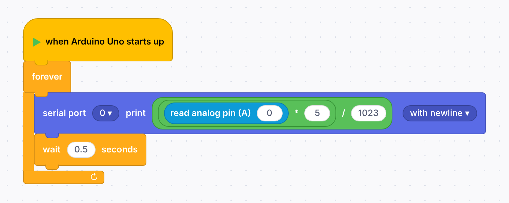

🎬فيديو الشرح
📖الشرح حسب العمر
🧒
المقاومة مثل صنبور يُضيّق مجرى الكهرباء حتى لا يحترق الـ LED.
المقاومة مكوّن إلكتروني يتحكّم في مرور التيار داخل الدائرة: تقلّل شدة التيار أو تقسّم الجهد. تُقاس بالأوم (Ω)، ويُمثَّل رمزها بخط متعرّج أو مستطيل صغير. بدونها قد يتلف الـ LED أو المتحكّم بسبب التيار الزائد.
المقاومة مكوّن إلكتروني يتحكّم في مرور التيار داخل الدائرة: تقلّل شدة التيار أو تقسّم الجهد. تُقاس بالأوم (Ω)، ويُمثَّل رمزها بخط متعرّج أو مستطيل صغير. بدونها قد يتلف الـ LED أو المتحكّم بسبب التيار الزائد.
- قانون أوم: V = I × R
- على التوالي: R = R1 + R2
- على التوازي: 1/R = 1/R1 + 1/R2
- القدرة: P = I² × R (المقاومات العادية 1/4W)
🖼️الصورة التوضيحية
- 1الشريط 1الرقم الأول
- 2الشريط 2الرقم الثاني
- 3المضاعفعدد الأصفار
- 4التفاوتذهبي ±5%
- 5الطرفانبدون اتجاه
💻البرمجة: Arduino IDE و mBlock 5
// مقسّم جهد بمقاومتين متساويتين: A0 يقرأ نصف 5V void setup() { Serial.begin(9600); } void loop() { float v = analogRead(A0) * 5.0 / 1023.0; Serial.println(v); // ≈ 2.5V delay(500); }

في mBlock 5: الأجهزة ← أضف ← Arduino Uno، اختر وضع رفع (Upload)، ثم اتصال واختر منفذ COM، ركّب الكتل كما في الصورة واضغط رفع.
🧮حاسبة ألوان المقاومة
✅سؤال سريع
ما وحدة قياس المقاومة؟